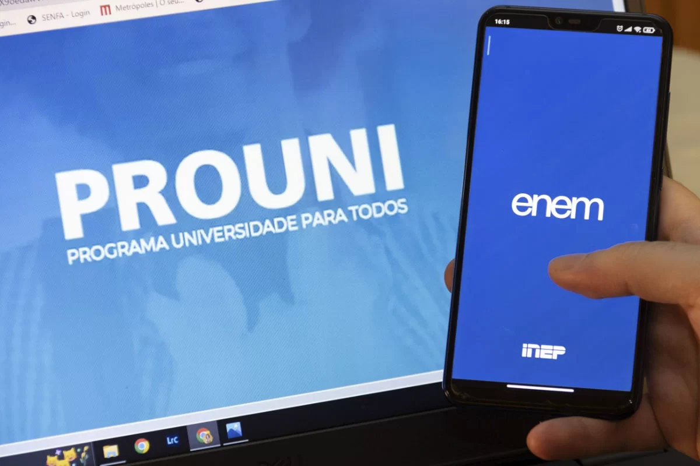
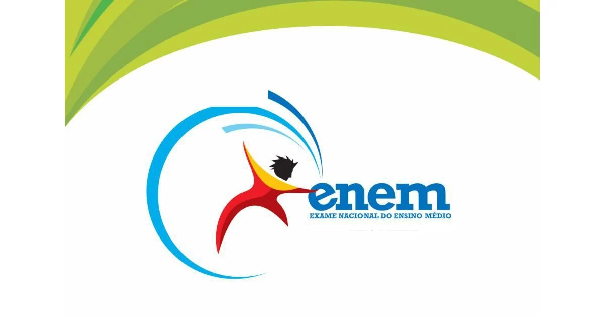

O que é:
Políticas públicas referem-se ao processo de tomada de decisões e à execução de medidas para
alcançar objetivos específicos que atendem ao interesse público. Elas envolvem a identificação de
problemas, a formulação de estratégias, a implementação das ações planejadas e a avaliação dos
resultados obtidos. A elaboração de políticas públicas é um processo complexo que envolve a
participação de diversos atores, incluindo governo, sociedade civil, especialistas, e o setor
privado.
Com que as políticas públicas te ajudam aqui:
Educação:
Políticas são definidas por governos e instituições educacionais com o objetivo de orientar e
estruturar o sistema educacional de um país. Clique aqui e veja como se inscrever em escolas, para
saber mais sobre as vagas escolares em sua cidade por favor, vá a prefeitura da sua cidade: educaçãoPrefeitura.com
Aqui temos o site de vagas para creches em São Paulo – SP, para saber mais sobre todo o pais entre
nesse link: portal.mec.gov
LINK SP: vagaNaCreche.com
Universidade:
SISU:
O Sistema de Seleção Unificada (SISU) é um programa do governo federal do Brasil, gerenciado pelo
Ministério da Educação (MEC), que centraliza a oferta de vagas em instituições públicas de ensino
superior. Ele utiliza as notas do Exame Nacional do Ensino Médio (ENEM) para selecionar os
candidatos às vagas disponíveis nas universidades e institutos federais.
Funcionamento do SISU:
Escolha de cursos:
- Cada candidato pode escolher até duas opções de curso e instituição;
- Durante o período de inscrição, o candidato pode alterar suas opções de curso, sendo
considerada válida a última escolha registrada.
Nota de Corte:
- Diariamente, o sistema calcula e divulga a nota de corte para cada curso, que é a menor
nota necessária para estar entre os possíveis selecionados;
- As notas de corte são atualizadas diariamente para que os candidatos possam monitorar
suas chances e ajustar suas opções de acordo.
Resultado:
- Após o período de inscrição, o sistema seleciona automaticamente os candidatos com as
melhores notas em cada curso, respeitando o número de vagas disponíveis;
- Os resultados são divulgados no site do SISU.
Matrícula:
- Os candidatos selecionados devem comparecer à instituição na qual foram aprovados para
efetivar a matrícula dentro do prazo estipulado;
- Caso o candidato não se matricule no prazo, perde a vaga.
Clique aqui para saber mais sobre o SISU pelo Brasil todo: SISU/Brasil.com
FIES:
O Fundo de Financiamento Estudantil (Fies) serve para facilitar o acesso ao ensino superior para
estudantes de baixa renda no Brasil. O programa, criado em 1999 pelo governo federal, possibilita o
financiamento da graduação em universidades particulares, oferecendo vagas com juros zero para
estudantes com renda per capita mensal familiar de até três salários mínimo
O Fies visa promover a inclusão educacional de jovens que, de outra forma, não teriam condições
financeiras de arcar com as mensalidades de um curso superior. Ao concluir a graduação, o estudante
beneficiado deve pagar a dívida contraída durante o financiamento.Além de juros baixos, o programa
oferece outras vantagens como prazo estendido para quitação do empréstimo e a possibilidade de obter
a Bolsa Permanência, um auxílio mensal para cobrir custos adicionais. Dessa forma, o Fies contribui
para a democratização do acesso ao ensino superior no país, alinhando os anseios individuais dos
estudantes com o progresso da sociedade.
Funcionamento do FIES:
Aqui está um passo a passo de como se inscrever no Fundo de Financiamento Estudantil (Fies):
Passo 1 - Verificar os requisitos:
- Ter realizado o Enem a partir de 2010;
- Ter média igual ou superior a 450 pontos no Enem;
- Ter nota maior ou igual a 400 na redação do Enem;
- Atender aos critérios de renda familiar per capita mensal de até 3 salários mínimos.
Passo 2 - Realizar a inscrição online:
- Acessar o site do Fies (fies.mec.gov.br) durante o período de inscrições;
- Criar uma conta ou fazer login com sua conta gov.br;
- Preencher o formulário de inscrição com seus dados pessoais e acadêmicos;
- Selecionar os cursos de interesse em ordem de preferência
Passo 3 - Apresentar documentação:
- Imprimir e assinar o Documento de Regularidade de Inscrição (DRI);
- Entregar o DRI assinado e a documentação comprobatória na instituição de ensino escolhida;
- A documentação pode incluir comprovantes de renda, identidade, CPF, entre outros;
Passo 4 - Aguardar o resultado:
- Após a análise da documentação, a instituição de ensino divulgará o resultado da pré-seleção;
- Os candidatos pré-selecionados deverão complementar suas inscrições no sistema informatizado do
Fies.
Passo 5 - Formalizar o contrato
- Após a complementação da inscrição, o candidato deverá formalizar o contrato de
financiamento;
- Para isso, será necessário comparecer a um agente financeiro (banco) com a documentação
exigida;
- O contrato deverá ser assinado pelo estudante e pelo fiador.
Após concluir esses passos, o estudante estará apto a iniciar o financiamento de seu curso superior
pelo Fies.
Clique aqui para saber mais sobre o FIES no Brasil todo: acessoUnico.gov.br
PROUNI:
O ProUni (Programa Universidade para Todos) é um programa do governo federal criado em 2004 que
oferece bolsas de estudo integrais (100%) ou parciais (50%) em instituições privadas de ensino
superior. O objetivo do programa é facilitar o acesso ao ensino superior para estudantes de baixa
renda.
Funcionamento do PROUNI:
Para participar do ProUni, o candidato deve atender a alguns requisitos:
- Ter realizado o Enem mais recente com média igual ou superior a 450 pontos e nota acima de zero
na redação;
- Ter renda familiar per capita máxima de 1,5 salário mínimo para bolsa integral ou 3 salários
mínimos para bolsa parcial;
- Não ter diploma de curso superior.
As inscrições são realizadas pela internet, no site do ProUni, durante o período estipulado pelo
programa. O candidato pode escolher até 2 opções de curso e instituição.
Após a seleção, os candidatos pré-selecionados devem comprovar as informações prestadas na inscrição.
Caso aprovados, os estudantes contemplados ficam isentos do pagamento das mensalidades durante a
graduação.
O ProUni é uma importante política pública de inclusão no ensino superior, beneficiando milhares de
estudantes que não teriam condições de arcar com os custos de uma faculdade privada.
Para saber mais clique no link abaixo: acessoUnico.gov.br


Problemas de Violência e Diretos Humanos:
A violência e os direitos humanos são temas interconectados que exigem uma abordagem abrangente e
integrada nas políticas públicas. A formulação de políticas públicas que abordem a violência de
maneira eficaz e que protejam os direitos humanos envolve vários aspectos e setores da sociedade.
Violência em comunidades é um problema complexo e multifacetado que afeta muitas áreas urbanas e
rurais. Essa violência pode se manifestar de várias formas, incluindo criminalidade, violência
doméstica, conflitos entre gangues, e abusos de autoridade. As causas são variadas e podem incluir
fatores socioeconômicos, falta de oportunidades educacionais e de emprego, desestruturação familiar,
tráfico de drogas, entre outros.
Para realizar denúncias clique nos links abaixo:
Ligue 190 para realizar sua denuncia (SP).
Para saber o número da sua cidade para realizar denuncias, clique no link abaixo:
Projetos sociais que existem para reduzir a violência pelo Brasil bem-sucedidos:
Unidades de Polícia Pacificadora (UPP): Iniciativa no Rio de Janeiro que busca reduzir a
violência em comunidades através da presença permanente da polícia e da oferta de serviços
sociais.
Programas de Mediação de Conflitos: Projetos que treinam mediadores comunitários para
resolver conflitos de forma pacífica e prevenir a escalada da violência.
Projeto Axé: Organização em Salvador, Bahia, que utiliza a arte e a educação para
reintegrar jovens em situação de vulnerabilidade social.
Abordar a violência em comunidades requer um esforço conjunto de governos, sociedade civil e
moradores locais para desenvolver soluções sustentáveis e inclusivas que promovam a paz e o
desenvolvimento social.